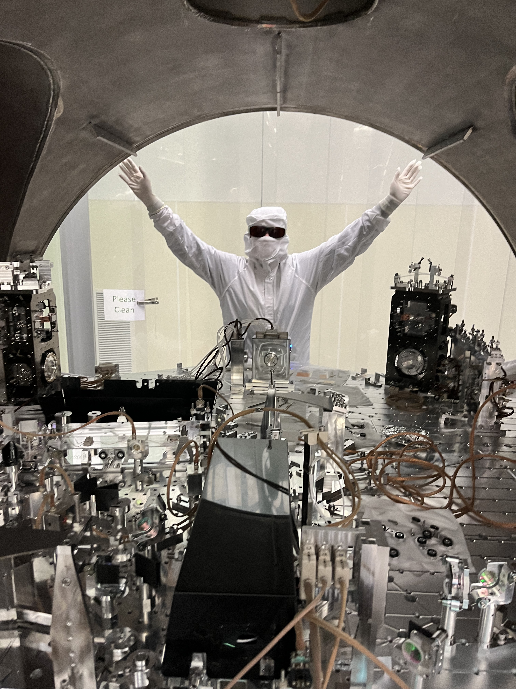
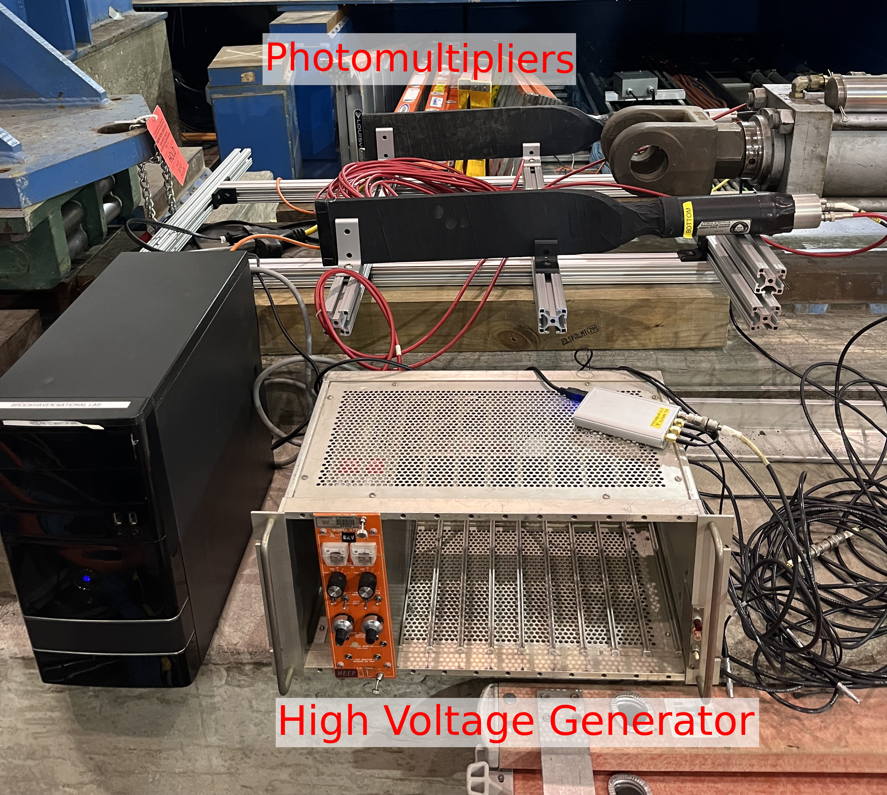

Hello! I'm a Ph.D. student in Physics at the University of California, Berkeley (since 2024), working with Dr. Victoria Xu in the Q-IFO Lab for Quantum Sensing & Interferometry.
I'm interested in how gravity and quantum mechanics meet, from the scale of colliding black holes to single atoms. As a member of the LIGO Scientific Collaboration, I work on reducing quantum noise in gravitational-wave detectors, and I'm developing precision tests of fundamental physics with ultracold strontium.
I am also very passionate about teaching. For Berkeley's Physics 10, I designed a full set of discussion worksheets that take non-majors from the double-slit experiment to quantum computing to develop an everyday intuition for quantum phenomena. They're all free to view on the teaching page.

Tunable Filter Cavity for LIGO
A filter cavity whose bandwidth can be tuned in place via a temperature-controlled etalon input coupler. Full noise-budget modeling projects a ~25% increase in binary-neutron-star range over a static filter cavity for LIGO A♯.

Squeezed Light @ Berkeley
Designing the bowtie optical parametric amplifier for the Berkeley squeezer. I'm jointly optimizing crystal length, pump focusing, input-coupler transmission, and cavity geometry to reach strong squeezing at lower pump power than the current LIGO design.

Testing Spin-Statistics with Strontium
Designing a tabletop precision test of the spin-statistics connection: searching for a two-photon transition in ultracold strontium that Bose symmetry forbids for identical photons. A signal would point to physics beyond the standard assumptions of quantum field theory.
Quantum Noise in Gravitational-Wave Detectors

Quantum noise now limits LIGO across most of its sensitive band, and squeezed light has become a permanent part of how the detectors operate. Frequency-dependent squeezing removed the trade-off between shot noise and radiation-pressure noise. The improvement it delivers, though, is set less by how much squeezing can be generated than by how much survives: optical loss, phase noise and mode mismatch erode it long before it reaches the readout. As the detectors move toward higher arm power for A♯ and eventually Cosmic Explorer, those tolerances tighten, and the squeezing system has to keep up with a detector whose configuration keeps changing.
My work targets that gap: squeezed-light sources that reach high squeezing efficiently, filter cavities that can be retuned instead of fixed at installation, and better ways to diagnose where squeezing is lost in a real interferometer.
Precision Tests of Quantum Statistics

The connection between spin and statistics is one of the best-confirmed predictions of quantum field theory. It rests, however, on assumptions about spacetime (Lorentz invariance, locality, causality) that theories involving noncommutative geometry could modify. Testing the exchange symmetry of identical particles is one of the cleanest ways to probe those assumptions directly.
For photons, the strongest spectroscopic test so far (English et al.) used selection rules in barium. Ultracold strontium offers a new platform for pushing that test further.
Detector Development for the Electron–Ion Collider

The Electron–Ion Collider will study how quarks and gluons give rise to the mass and spin of protons and nuclei. Much of that program depends on reconstructing low-momentum tracks and displaced vertices, where multiple scattering in the detector material, not sensor resolution, sets the limit. That makes the material budget of the ePIC Silicon Vertex Tracker a central design constraint, and cooling is one of its largest contributors.
I worked on whether the silicon-vertex tracker can be cooled with air alone, eliminating liquid-cooling infrastructure from the active volume, through thermal modeling of heat loads and cooling configurations. I presented the results to the California EIC Consortium in 2025.
The sPHENIX Experiment

sPHENIX at RHIC probes the quark–gluon plasma with jets and heavy-flavor measurements, and 2023 was its first run. Commissioning a new detector depends on knowing, in real time, that every subsystem is reading out correctly. I worked on the data-acquisition monitoring used by the shift crews, and built a scintillator experiment to measure the cosmic-ray muon flux along the beamline.
ATLAS Open Data
ATLAS releases real LHC collision data so that students can do genuine particle-physics analysis outside the collaboration. I extended the open-data analysis framework with new fitting functions and machine-learning methods for proton–proton collision data, and built that work into task sheets for a master's-level laboratory course on computational methods in particle physics.
Advisor: Dr. Victoria Xu · Hearts to Humanities Graduate Research Grant Recipient & Fellow
GPA 3.86/4.0
Collaboration Papers
Presentations
Hearts to Humanities Graduate Research Grant & Fellowship
Nadia Trinkala Service Award
Awarded to a physics student who has made significant contributions to the RPI community and the City of Troy. Recognized for leadership as Women+ in Physics Chapter President and sustained commitment to inclusion in the physical sciences.
Rensselaer Leadership Award · Rensselaer Recognition Award
- LIGO Scientific Collaboration
- ePIC Collaboration
- Society of Women in Physics
Graduate Student Instructor, UC Berkeley
Berkeley's "Physics for Future Presidents" course emphasizes physical intuition, quantitative reasoning, and scientific literacy. For this course I created hands-on discussion materials built around the questions non-majors actually ask: Can a particle be in two places at once? Could we build a fusion reactor? What is a quantum computer, really? Each one is designed so that every student leaves able to reason about the physics behind the headlines.
All of my worksheets are below and free to use.
- Led discussion sections and laboratory instruction for calculus-based introductory mechanics: kinematics, dynamics, work and energy, momentum, rotational motion, and oscillations.
- Guided students through experimental measurement, uncertainty analysis, quantitative modeling, and interpretation of physical data.
Other Teaching & Curriculum Development
- Wrote task sheets and documentation for a master's-level computational particle-physics lab course at TU Dresden.
- Designed the curriculum for a high school student's Z-boson invariant mass analysis with ATLAS Open Data (Particle World Network).
- Mentor in Berkeley's Physics Directed Reading Program. See Outreach →
Hold quarterly safety meetings; review accidents and near-misses; support chemical inventory, lab inspections, and compliance with campus requirements; develop new procedures as needed.
Guide undergraduates through independent reading projects in physics beyond the standard curriculum.
Mentored undergraduates from underrepresented backgrounds in mathematics and the physical sciences through the MPS Scholars program.
Led the campus chapter promoting inclusion and community for women and gender minorities in physics. Organized speaker series, mentorship programs, and outreach events.
Developed curriculum and project goals for a high school student completing a Z-boson invariant mass analysis using ATLAS Open Data.
Always happy to discuss research, teaching, potential collaborations, or opportunities.
| katiegray@berkeley.edu | |
| Office | Birge Hall, Room 275 |
| Address | Department of Physics University of California, Berkeley Berkeley, CA 94720 |
| CV | Download (PDF) |
| Scholar | Google Scholar |
| INSPIRE | INSPIRE-HEP Profile |
| ORCID | 0000-0002-9950-983X |
| GitHub | @katiegrayy |
| Katie Gray |